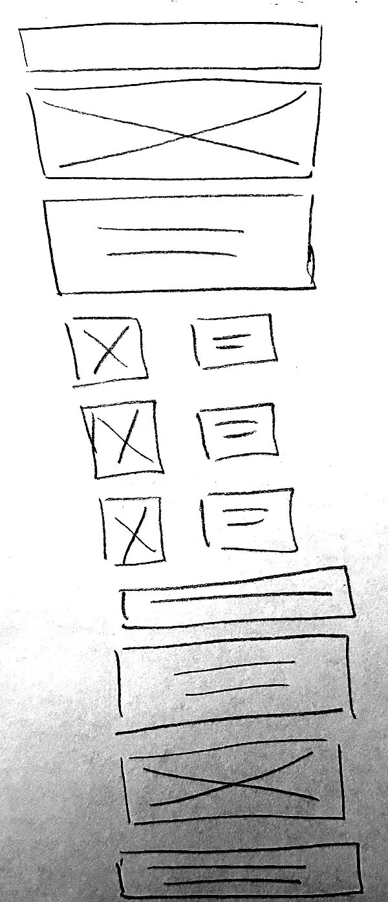
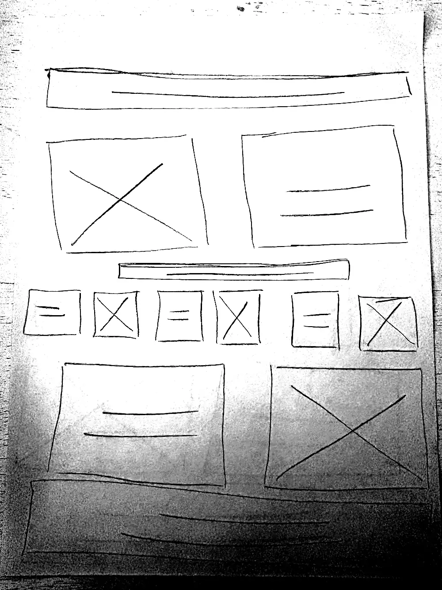

Site Name
Wonder Pages Book Club
The name pairs "wonder" (the curiosity that brings readeres to a new book) with "pages" (the one thing every member shares wheter they attend in person or join from home).
Optional domain availability: wonderpages.org
Site Purpose
The site is the home base for a hybrid book club that meets once a month. It publishes the current and past reading list with details for every selection, shows when and where the next in-person meeting happens and how to join the same discussion online, and provides a membership form so new readers can sign up and choose the format that fits their schedule.
Scenarios
Questions a visitor from the target audience would arrive with:
- What book is the club reading this month, and when is the next meeting?
- I live too far to drive to the meetings — can I still join the discussion online?
- Which books has the club already read, and can I filter them by genre?
Color Scheme
A soft, paper-toned palette that keeps long blocks of text comfortable to read. Every combination below meets the WCAG AA contrast minimum for its use.
| Swatch | Name | Hex | Where it is used |
|---|---|---|---|
| Deep Sage | #4A4B38 |
Body text, headings, footer background, navigation bar background | |
| Savory Sage | #818263 |
Section rules, borders, large subheadings, icons | |
| Avocado Smoothie | #C2C395 |
Card borders, hover and focus states, active navigation indicator | |
| Blush Beet | #DDBAAE |
Primary buttons and calls to action, with Deep Sage text | |
| Peach Protein | #EFD7CF |
Highlight boxes, the "next meeting" panel, form field focus background | |
| Oat Latte | #DCD4C1 |
Alternating section backgrounds, table header rows | |
| Honey Oatmilk | #F6EAD4 |
Book card backgrounds, modal dialog background | |
| Coconut Cream | #FFFAF2 |
Page background, text placed on Deep Sage |
Savory Sage is reserved for large text and non-text elements. Deep Sage is a darker step in the same hue family and carries all body copy so that normal-size text stays above the 4.5:1 contrast minimum.
Typography
Two typefaces, chosen so the club reads as literary without feeling formal.
Fraunces
Applied to: the site name in the header, all page headings
(h1–h3), and book titles on the reading list cards.
Why: a soft serif with the warmth of a printed book jacket. It gives the headings personality while staying readable at large sizes.
Source Sans 3
Applied to: all body paragraphs, navigation links, form labels and inputs, buttons, tables, and the footer.
Why: an open, neutral sans-serif built for screen reading. It stays clear at 320px and does not compete with the headings.
Wireframe
Hand-drawn layout sketches for the home page, showing the small-screen and large-screen views before color, images, and type are applied.

